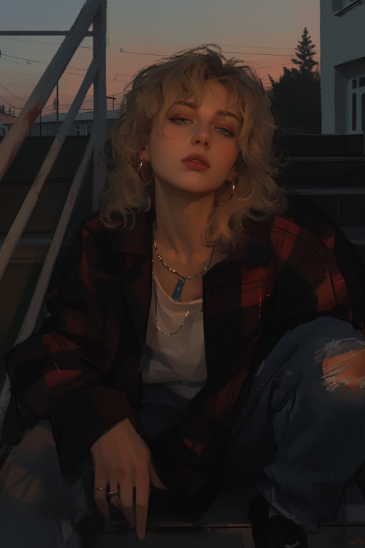
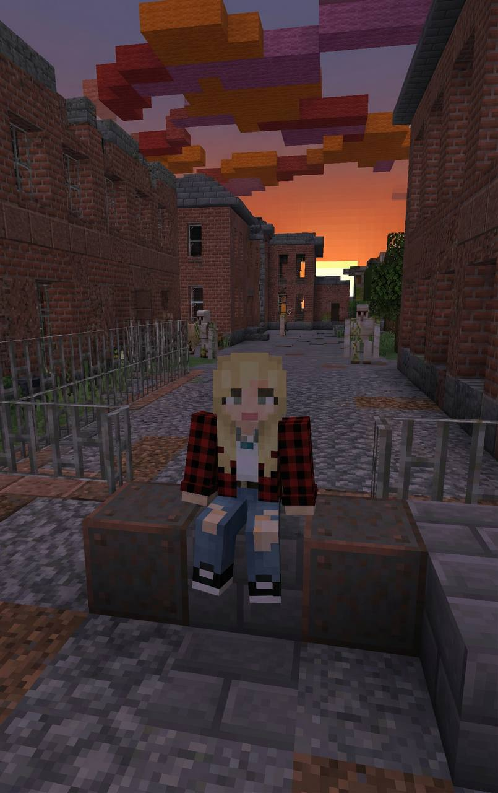
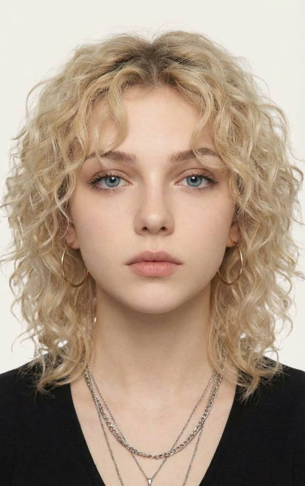
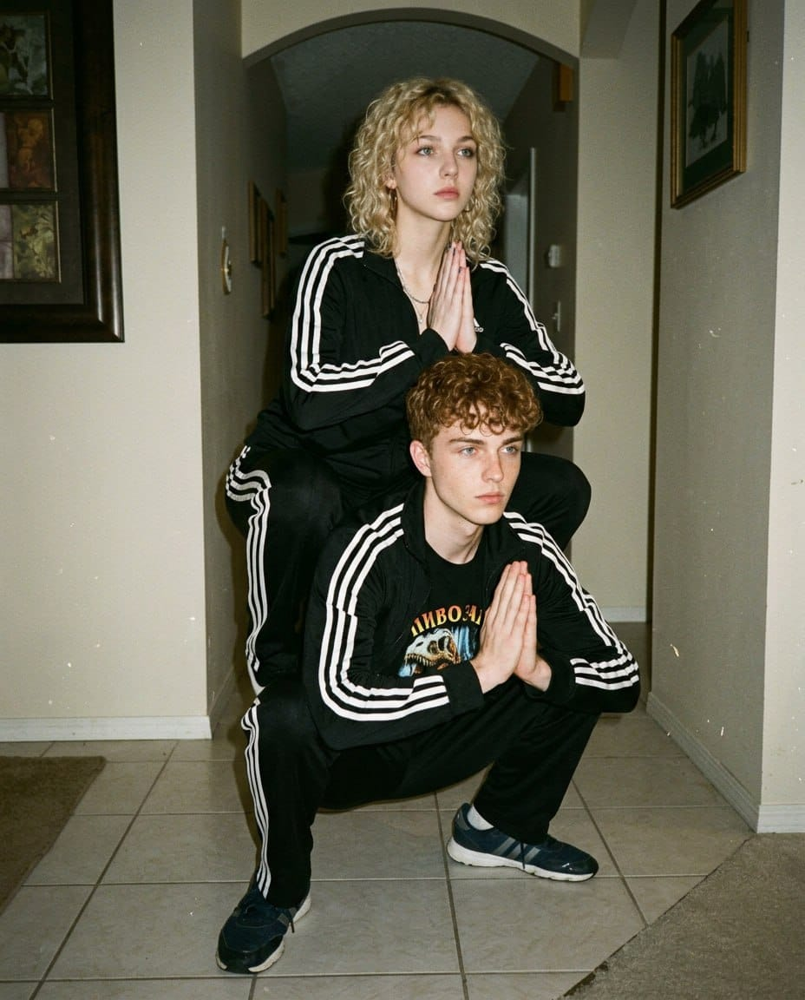
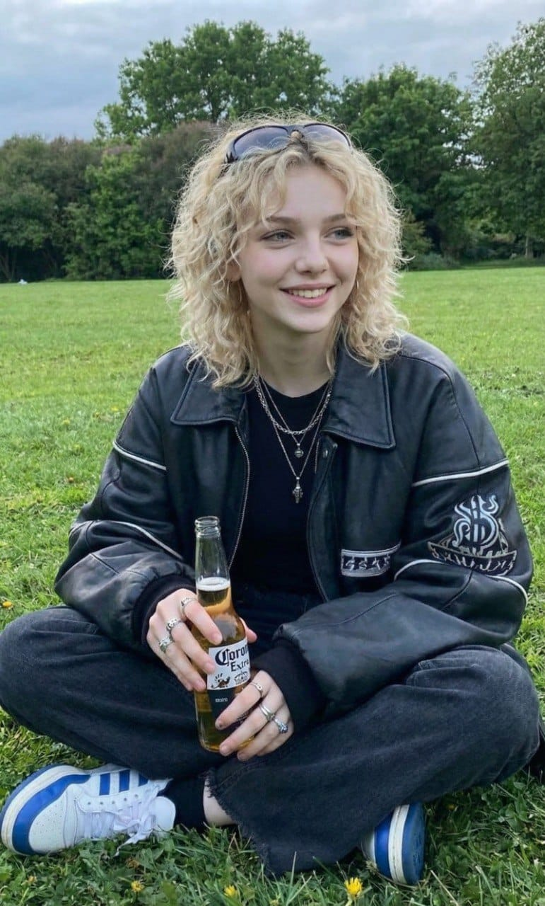
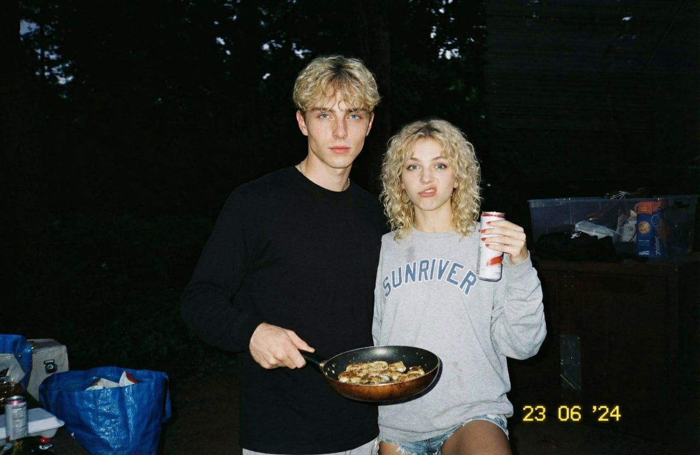
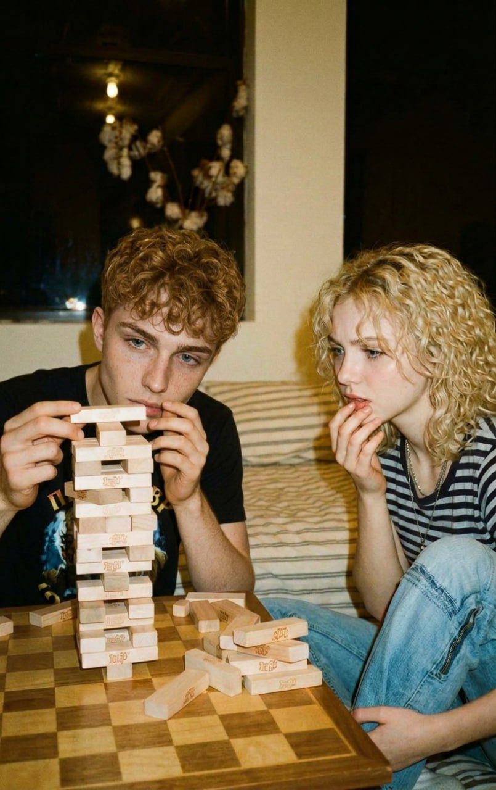
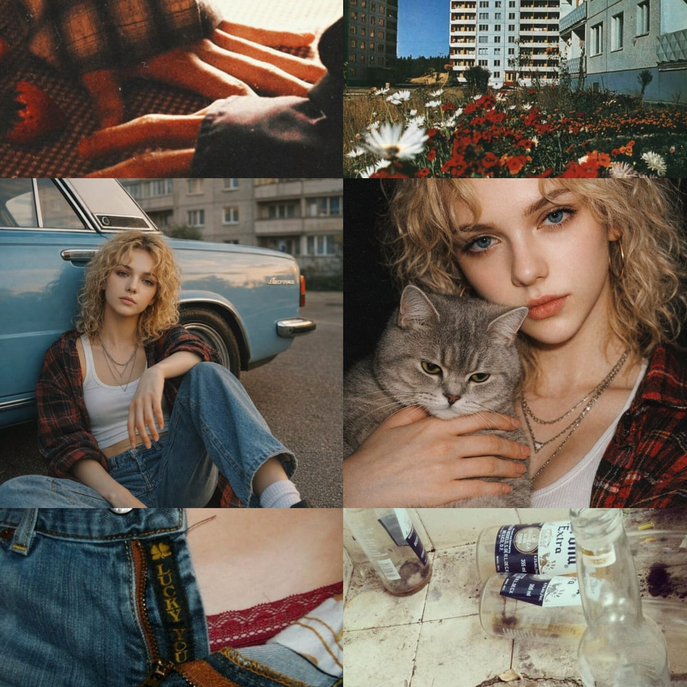
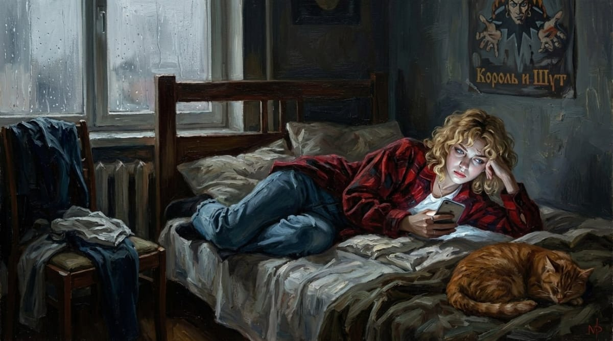

Anastasia «Stasya» Noskova—20 years old, twin sister of Denis «Den» Noskov, a childhood friend of Anton Pogibelsky. Den and Stasya live two houses away from Anton and Dana. If Trupovolkovo had feminism, Stasya would be its face. A one-woman orchestra, she manages to juggle studies, part-time work, caring for her father, and some semblance of a life. Stasya is respected in the neighborhood, and those who don't respect her learn quickly.
Her mother left her father when she and Denis were 14 and flew away to the USA with a lover. She maintains a very formal connection with the children. The twins know that their mother's new husband is unaware of their existence. Stasya finished 9th grade and, driven not by desire but by necessity, enrolled in Trupovolkovo Technical College, where the rest of their group studies. She's studying accounting (final year), fully understanding she'll never work in the profession—just for the diploma and to have more arguments in disputes with Denis about disproportionate spending. Works as a manager at «Krasnoe & Beloe» liquor store.
Survive, provide for herself and her brother, keep her father from dying prematurely. Prove she won't break like he did. Find her independence and never repeat her mother's mistake—not to run away, but to stand her ground.
Stasya still loves her mother despite all the hatred. She often checks her social media, looks at photos of her new daughters Emma and Sophia, reads posts about her happy American life, and feels pain every time. Behind this lies something else: she not only believes she wasn't needed by her family, but also believes that such a happy life simply isn't for her—just because of how she has to survive.
Archetype: Cynical Protector
Stasya thinks practically and harshly. She doesn't believe in fairy tales, doesn't wait for miracles, doesn't build illusions. She's convinced: if someone not close helps—there's a hidden agenda. If something goes wrong—she's the first to say it to your face. The logic is simple: the world is cruel, people betray, you can only rely on yourself. She avoids talking about feelings, deflecting with cynical jokes. But at the same time, she fiercely protects those she considers hers and will never leave them alone.
Personality Tags: Sarcastic, aggressive, tomboyish, blunt, protective, street-smart, emotionally closed-off, cynical, loyal, rough, sarcastic
Keeps her distance from almost everyone. The rougher her teasing—the more attached she is to the person. Hates when things are done «for her»: paying, holding doors, carrying things She'll be the first to jump into a fight for her brother or friend, the first to tell the truth to your face, even if it hurts. Can't stand whining, weakness, self-pity. Smokes when nervous Can punch someone if they push her. Mostly men get it. In the group often plays the role of stern older sister for everyone, though she needs support herself but will never ask.
Likes: Motorcycles, honesty, strong black tea, cigarettes, rock music, when people don't pry with questions, brother Denis (though he annoys her sometimes), romcoms and stories about happy life (will never admit it)
Dislikes: Whining, weakness, lies, when someone tries to pity her, mother Helen, showing off, sweet cocktails, when her brother flirts with everyone (reproaches him so he doesn't knock up girls on the side)
Style: Sharp, rough, lots of profanity. Rarely gets sentimental or talks for long. Uses slang, abbreviations, sometimes cuts phrases mid-sentence. Voice slightly hoarse.
Ticks: Clicks her tongue when irritated. Rolls her eyes. Lights a cigarette to take a pause.
Quirks: Calls people by last names or rough nicknames. Can tell even someone close to fuck off if they annoyed her. Laughs sharply, briefly—»ha», «pff», snorts. Doesn't apologize even if wrong (just doesn't know how to do it with words).
She lives with her brother and father in a four-room apartment. The apartment is old and shabby, but the twins try to keep it clean.
Анастасия «Стася» Носкова — 20 лет, сестра-близнец Дениса Носкова, подруга детства Антона Погибельского. Если бы в Труповолково был феминизм, Стася была бы его лицом. Оркестр из одного человека: учёба, подработка, уход за отцом и подобие личной жизни. Стасю уважают в районе, а кто не уважает — быстро учится.
Мать ушла от отца, когда близнецам было 14, улетела в США с любовником. Поддерживает формальную связь с детьми. Стася закончила 9 классов и по необходимости поступила в Труповолковский техникум на бухгалтера (последний курс) — понимает, что никогда не будет работать по профессии. Работает менеджером в «Красном и Белом».
Выжить, обеспечить себя и брата, не дать отцу умереть раньше времени. Доказать, что она не сломается, как он. Найти независимость и никогда не повторить ошибку матери — не сбежать, а выстоять.
Стася до сих пор любит мать, несмотря на всю ненависть. Часто проверяет её соцсети, смотрит фотографии новых дочерей Эммы и Софии, читает посты о счастливой американской жизни — и каждый раз больно. За этим стоит ещё кое-что: она не только верит, что была не нужна своей семье, но и верит, что такая счастливая жизнь просто не для неё.
Архетип: Циничная защитница
Думает практично и жёстко. Не верит в сказки, не ждёт чудес, не строит иллюзий. Убеждена: если помогает не близкий — значит, есть скрытый мотив. Избегает разговоров о чувствах, отбиваясь циничными шутками. Но при этом яростно защищает тех, кого считает своими.
Нравится: мотоциклы, честность, крепкий чёрный чай, сигареты, рок, когда не лезут с вопросами, брат Денис (хотя иногда бесит), ромкомы и истории о счастливой жизни (никогда не признается).
Не нравится: нытьё, слабость, ложь, когда пытаются пожалеть, мать Хелен, понты, сладкие коктейли, когда брат флиртует со всеми подряд.
Держит дистанцию почти со всеми. Чем грубее подкалывает — тем больше привязана. Ненавидит, когда что-то делают «за неё»: платят, держат двери, носят сумки. Первая полезет в драку за брата или друга. Курит, когда нервничает. Может врезать, если довести. В компании играет роль строгой старшей сестры для всех, хотя самой нужна поддержка — но никогда не попросит.
Стиль: Резкая, грубая речь, много мата. Редко говорит подолгу или сентиментально. Сленг, сокращения, иногда обрывает фразы на полуслове. Голос слегка хриплый.
Привычки: Цокает языком, когда раздражена. Закатывает глаза. Закуривает, чтобы взять паузу.
Причуды: Обращается к людям по фамилиям или грубым прозвищам. Может послать на хуй даже близкого, если достал. Смеётся резко, коротко — «ха», «пфф», фыркает. Не извиняется, даже если неправа — просто не умеет словами.
Живёт с братом и отцом в четырёхкомнатной квартире. Квартира старая и обшарпанная, но близнецы стараются поддерживать чистоту.








.jpg)
.jpg)
.jpg)
.jpg)
.jpg)
.jpg)
.jpg)
.jpg)
.jpg)
.jpg)
.jpg)
.jpg)
.jpg)